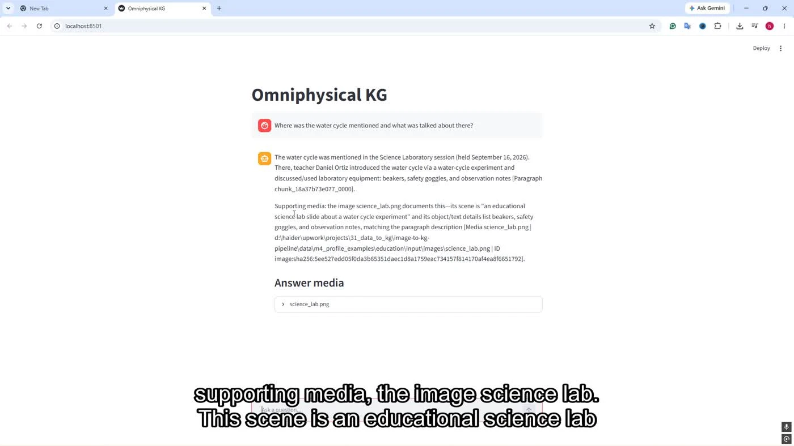

ACTUAL PROJECT OUTPUTThe problem
Documents, images, video, and audio contain related information, but extraction and search become fragile when their source relationships, identities, and metadata are lost.
My contribution
I implemented multimodal ingestion and semantic-extraction stages, integrated media and text graph layers, worked on retrieval/reranking, and ported the Windows pipeline to Apple Silicon.
What I delivered
- PDF/media extraction, OCR handling, deduplication, and provenance manifests linking outputs back to source material.
- Image, video, audio, and metadata processing feeding a Neo4j-backed knowledge graph.
- Media/text entity integration and a retrieval workflow combining candidate signals with semantic reranking.
- Platform-aware launchers, dependency handling, and CPU/MPS fallbacks for macOS compatibility.
Engineering decisions
- Preserve provenance and deterministic record identity through each ingestion stage.
- Retrieve candidates before reranking; investigate entity-alias and language-related failure cases with real inputs.
- Make hardware-dependent components optional so the application can run across Windows and Apple Silicon.
Outcome & scope
An integrated client workstream connecting heterogeneous media to structured knowledge, with verified compatibility work on Apple Silicon.
The count is from a macOS compatibility validation checkpoint. It does not imply universal retrieval accuracy or MPS acceleration for every component.
Skills strengthened
This project deepened my experience with provenance, retrieval debugging, and the practical dependency issues involved in cross-platform ML software.